Research
Our ongoing research interests are in wireless communications and networking, with the intersection of communication theory, signal processing, mathematics, and artificial intelligence. We focus on developing fundamental mathematical tools and communication principles to design and build smart communication systems. Our research is largely interdisciplinary and draws upon tools from optimization, probability and statistics, machine learning, game theory, control, and economics to design and build wireless communication systems.
We are currently focused on several research thrusts for next generation mobile networks (6G):
Space-Air-Ground-Sea Integrated Networks (SAGSIN)
Non-Terrestrial Networks (NTN)
Satellite Commnications and Networking
Internet of Vehicles (IoV), Vehicle-to-Everything (V2X)
Edge Computing
Space-Air-Ground-Sea Integrated Networks
Industry and academia are paying increasing attention to sixth-generation (6G) communication network research. The visioning and planning of 6G communications have begun, intending to provide communication services for future demands. 6G is towards ubiquitous 3D coverage, intelligent and green networks, the Internet of Everything, etc. As a result, 6G will combine different networks: satellites, oceans, airplanes, mobile cellular, and other undefined networks to achieve seamless coverage of integrated information.
Space-air-ground-sea integrated networks (SAGSIN) have gained significant attention and become a promising architecture for ubiquitous connectivity for 5G-Advanced and 6G, enabling the integration of space, aerial, and terrestrial network segments. In SAGSIN, as a multidimensional network, computation and communication resources will be unbalanced in different network segments, even in different satellite orbits. Therefore, network segments would cooperate with each other to fully utilize the limited resources and provide better performance. This integration brings tremendous communication benefits, including non-terrestrial networks, seamless global coverage, high flexibility, and augmented system capacity. However, various technical problems must be solved when we embrace satellite communications, such as highly dynamic networks, scarce frequency resources, heterogeneous integration with terrestrial networks, etc. Some of the research directions we are working on are listed below for reference.
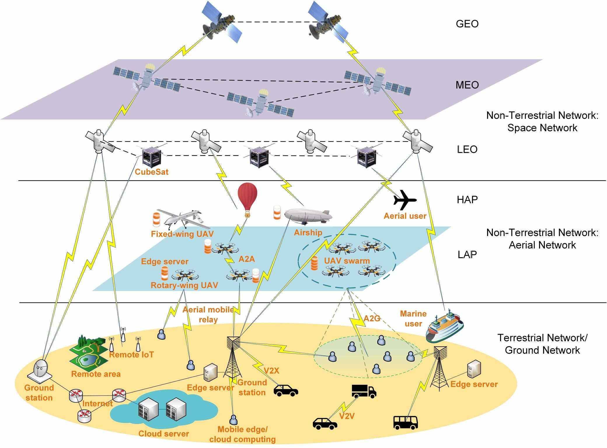  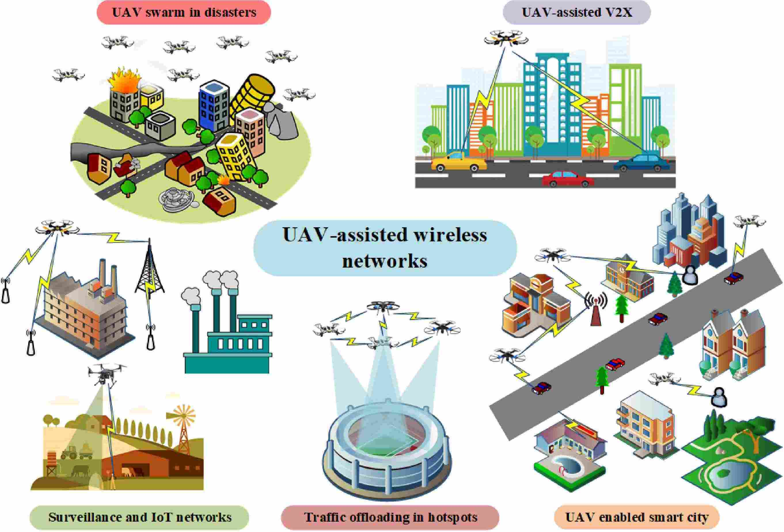
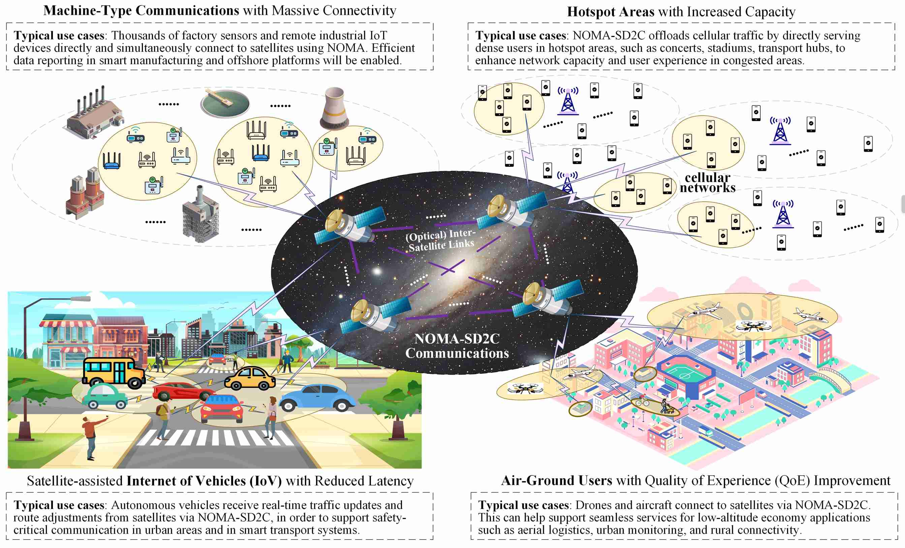
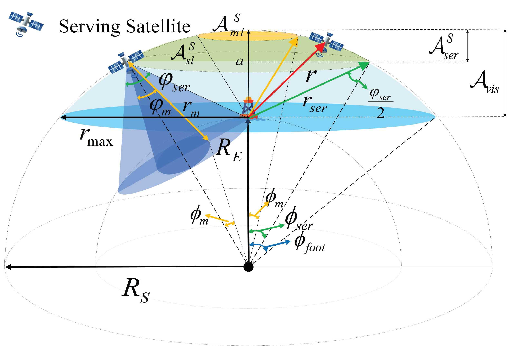
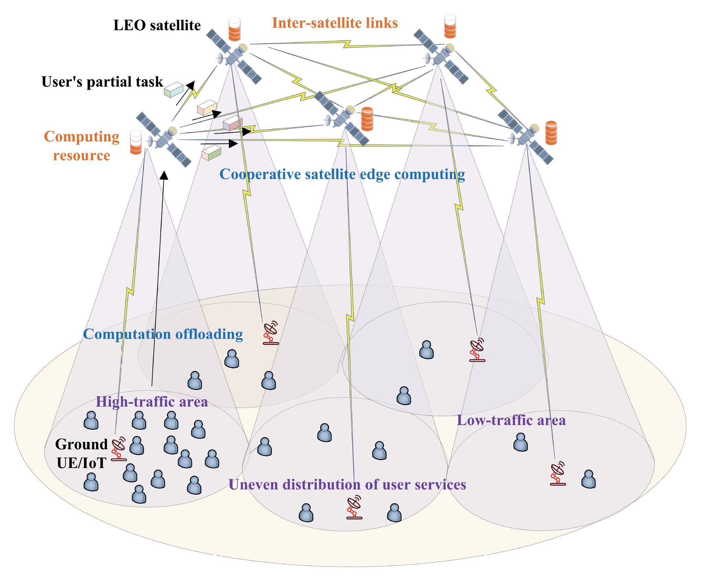
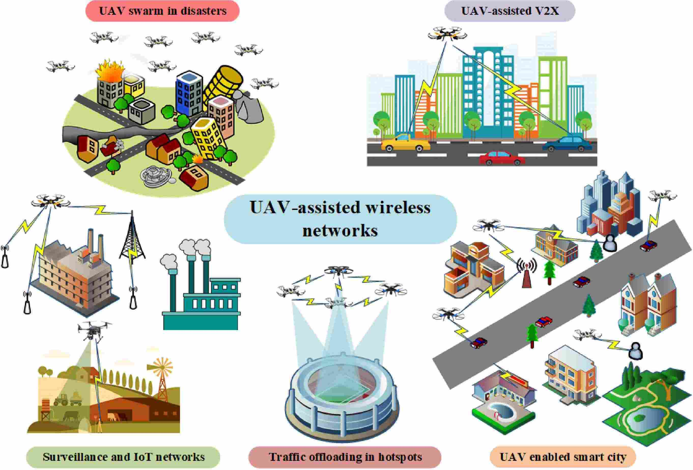
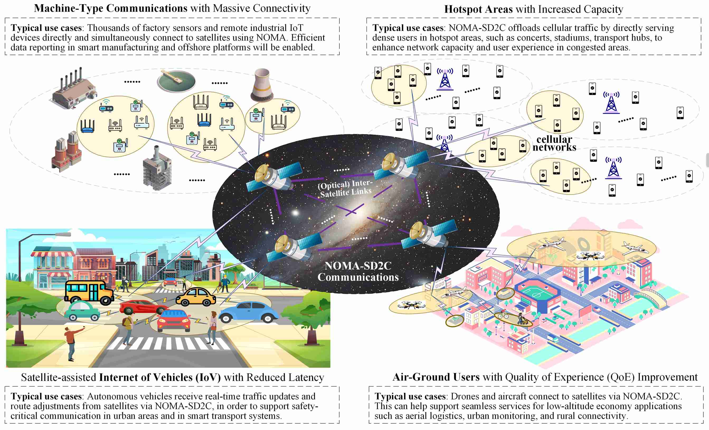
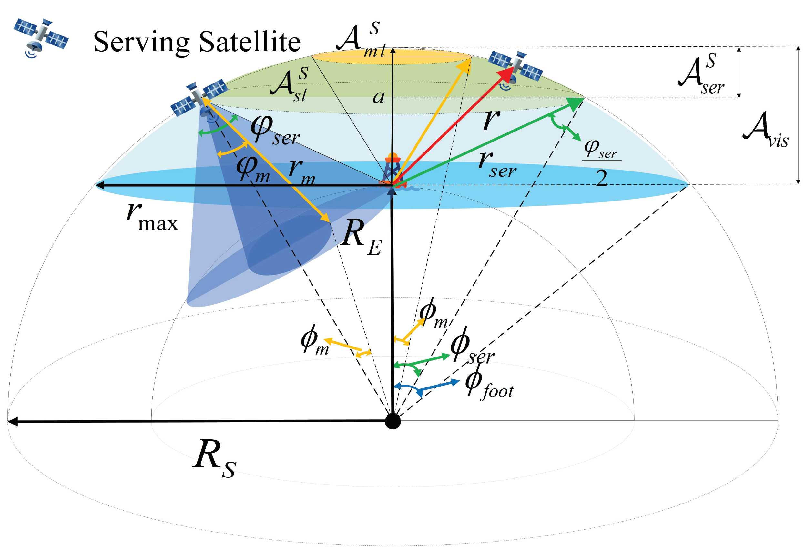
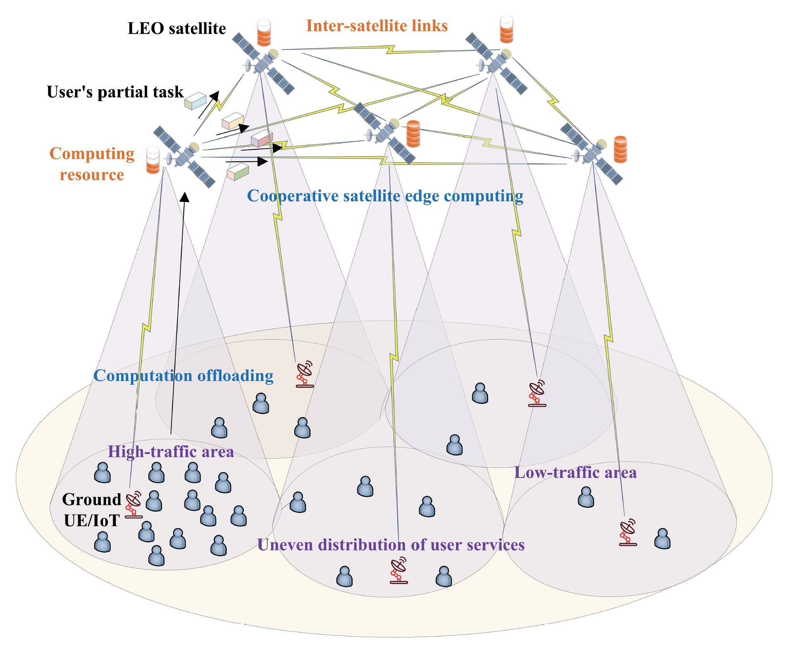 |
-
Enabling Key Technologies for Non-Terrestrial Networks (NTN)
Heterogeneous integration of satellite communication and 5G terrestrial networks
Computing over space-air-ground-sea integrated networks (SAGSIN)
Spectrum Sharing for low earth orbit (LEO) satellite communications
Communication protocol design for NTN
Resource allocation in satellite-terrestrial networks
Intelligent interference management in NTN, etc.
Unmanned Aerial Vehicle (UAV) and Terrestrial Networks
Resource allocation in UAV communications
Efficient UAV swarm networking and communications
Reconfigurable intelligent surfaces (RIS) and UAV
Multi-antenna techniques, multi-channel communications
Integrated sensing and communication (ISAC), etc.
Internet of Vehicles (IoV)
Internet of Vehicles (IoV) is a network of vehicles equipped with sensors, software, and technologies that mediate between these to connect and exchange data over the Internet according to agreed standards. It is expected that IoV will be one of the enablers for autonomous, connected, electric, and shared future mobility. The vehicle could communicate with any entity that may affect or may be affected by the car. Vehicle-to-everything is a vehicular communication system that incorporates other more specific types of communication such as V2I (vehicle-to-infrastructure), V2N (vehicle-to-network), V2V (vehicle-to-vehicle), V2P (vehicle-to-pedestrian), V2D (vehicle-to-device), which can be used for road safety, traffic efficiency, energy savings, and mass surveillance. Besides, cellular V2X (C-V2X) is proposed as a 3GPP standard, an alternative to IEEE 802.11p, for V2X applications such as self-driving cars. Interestingly, C-V2X mode four communication relies on a distributed resource allocation scheme, namely sensing-based semi-persistent scheduling, which schedules radio resources in a stand-alone fashion in each user equipment. However, many problems need to be solved in IoV, such as limited bandwidth and data rate, limits of signal propagation due to surroundings, imperfect channel state information, etc. Intelligent transportation system (ITS) is an advanced application that aims to provide innovative services relating to different modes of transport and traffic management. It enables users to be better informed and make safer, more coordinated, and 'smarter' use of transport networks. Various forms of wireless technologies could be used for ITS. Some of the research directions we are working on are listed below.
| 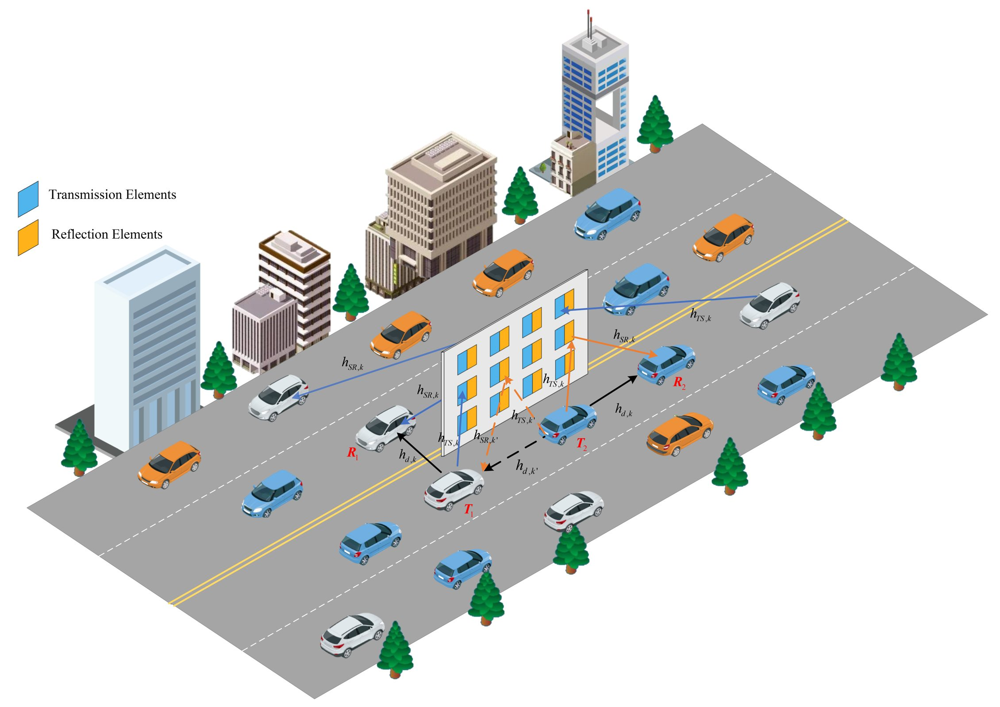 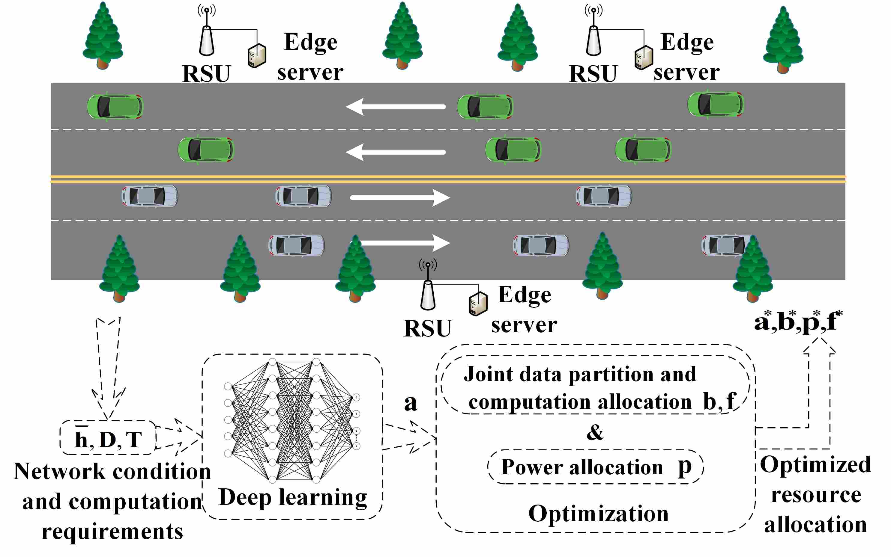 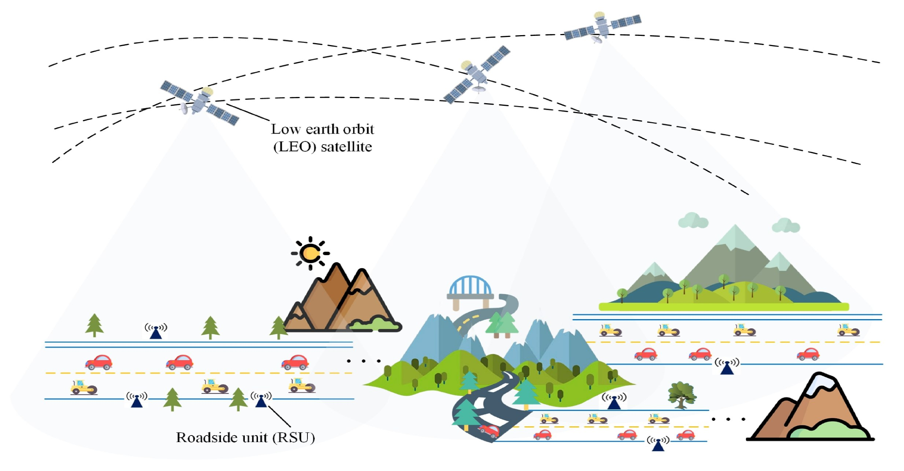 |
-
Intelligent Connected Vehicles and Advanced Transportation Systems
Vehicular communications, sensing, and spectrum-sharing technologies
Vehicular edge computing (VEC) systems
Internet of Vehicles (IoV) network architecture design
Integrated sensing and communications (ISAC) in vehicular networks
Intelligent transportation systems (ITS)
Communication protocol design based on cellular vehicle-to-everything (C-V2X)
Satellite-assisted IoV
Content cache and distribution in IoV, etc.
Artificial Intelligence (AI) for Wireless Communication Systems
Artificial intelligence (AI) is the key to overcoming complexity in modern wireless systems design. AI promises to address the design complexity of radio frequency (RF) systems by employing powerful machine learning algorithms and significantly improving RF parameters such as channel bandwidth, antenna sensitivity, and spectrum monitoring. Wireless networks have also become more challenging to manage due to requirements necessitating optimal sharing of valuable resources to expanding sets of users. AI has brought the sophistication necessary for modern wireless applications. As the number and scope of devices connected to networks expand, so will AI's role in wireless. Besides, AI techniques can better solve non-linear problems by extracting any pattern automatically and efficiently, beyond the ability of human-based approaches.
Compared to previous generations of mobile communication networks, 6G pursues higher data rate and capacity, more stringent latency constraints, ultra-reliability, more comprehensive coverage, higher energy efficiency, etc. These goals pose more complex problems, efficient algorithms for optimizing radio resources, and effective learning from the physical layer to higher layers. AI could be a disruptive technology to solve challenging problems related to estimation, optimization, analysis, and prediction. This enables us to further increase communication system performance by integrating various AI models and traditional methods. Some of the research thrusts we are working on are listed below.
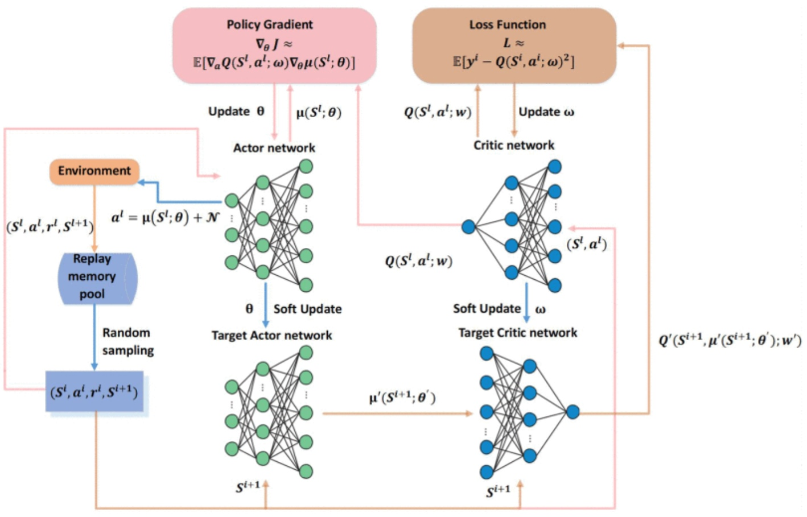  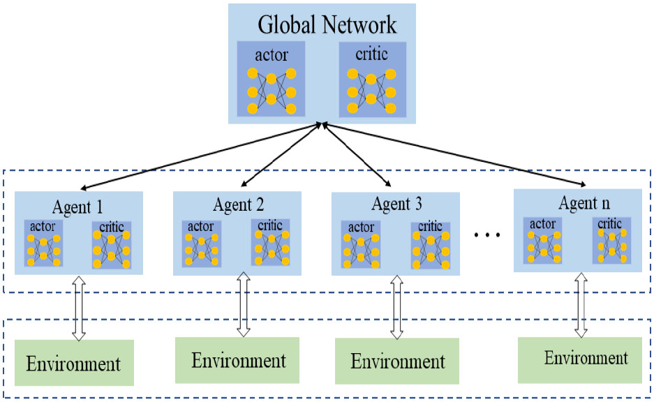 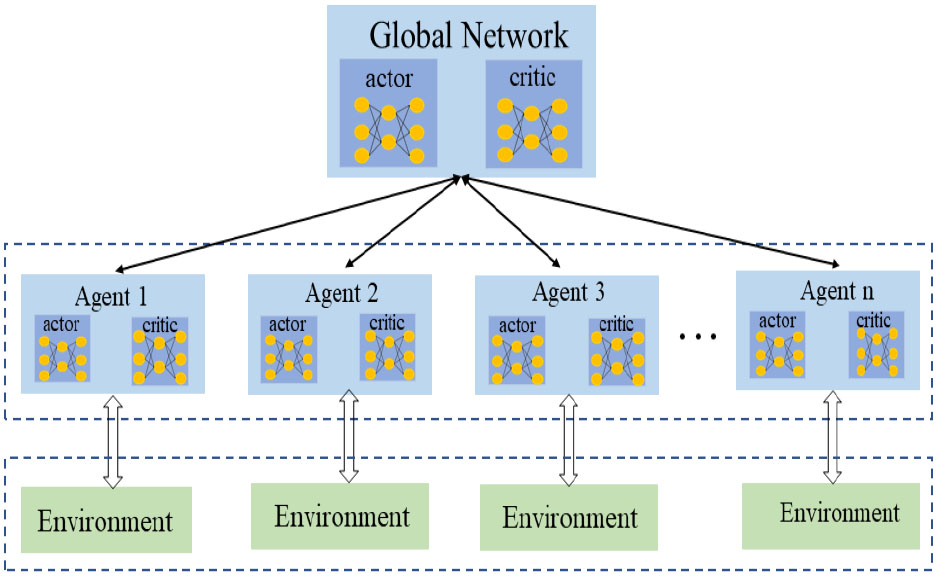 |
Machine Learning for Wireless Communication Systems
AI at the physical layer (PHY): machine learning for signal processing, deep reinforcement learning, online machine learning, self-supervised learning, etc.
AI at the media access control (MAC) layer: deep learning for dynamic media access, wireless interference identification, etc.
Machine learning for wireless network optimization: deep learning and deep reinforcement learning assisted resource allocation design, federated learning for edge intelligence, etc.
Machine learning for network traffic prediction, analysis, optimization, load balancing, etc.
Machine learning theory: interpretation, generality, theoretical analysis, etc.